snapshots

my journey in pictures
stars challenge 2014
Who Am I?
amrita mazumdar
grew up in Marlboro,
went to High Technology HS,
graduated from Columbia in NYC,
soon going to grad school in Seattle to build new computers!

i love to code!
But I didn't always...
the "punk" days...
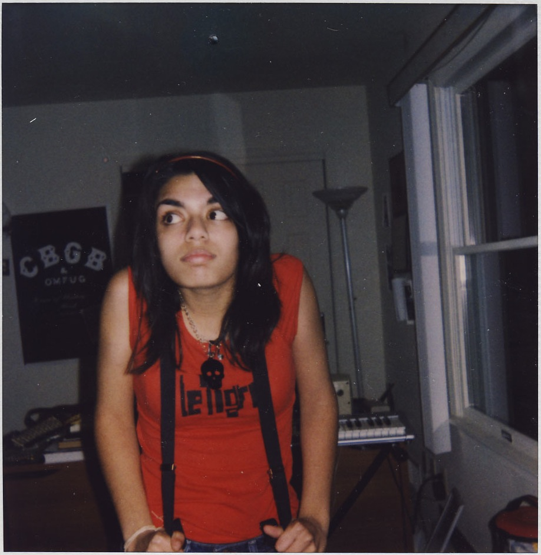
not too interested in coding here. i did like photos though!
my first project: polaroids and photoshop
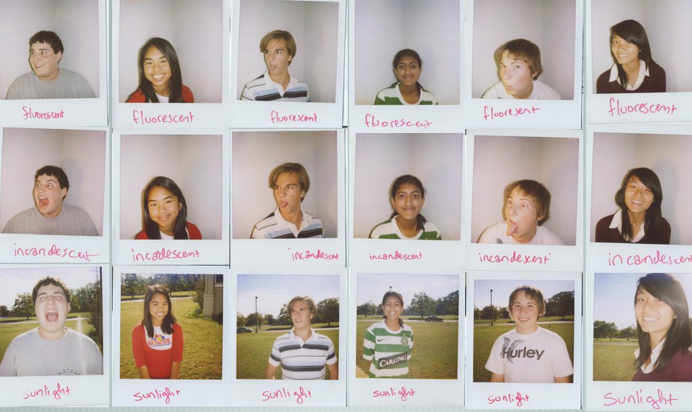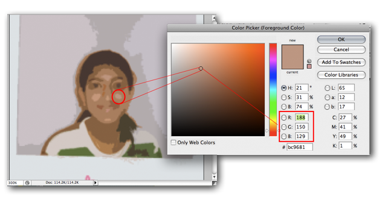
wasn't a successful project ): but gave me some good ideas!
schlieren optics: seeing the invisible
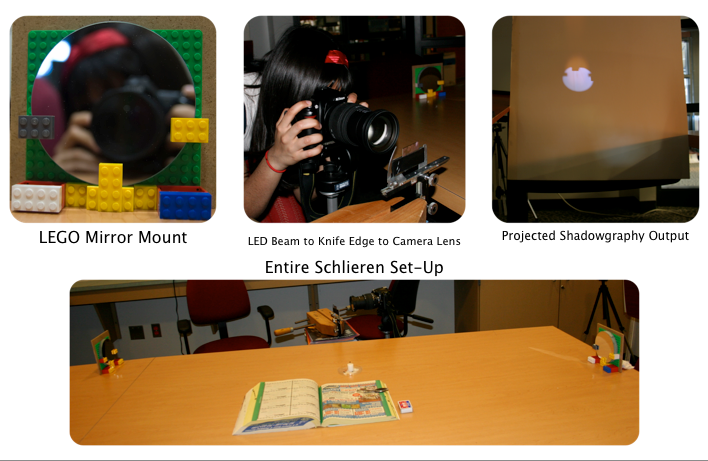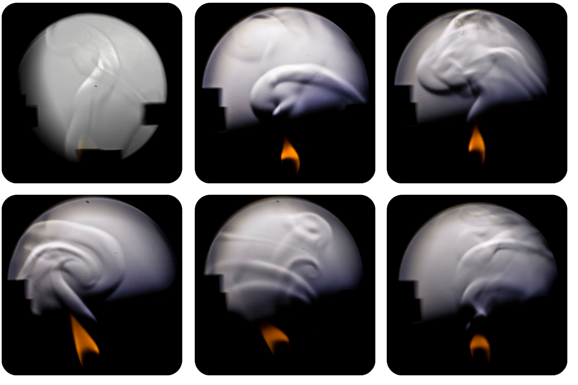
learning to code: the good, the bad, the ugly
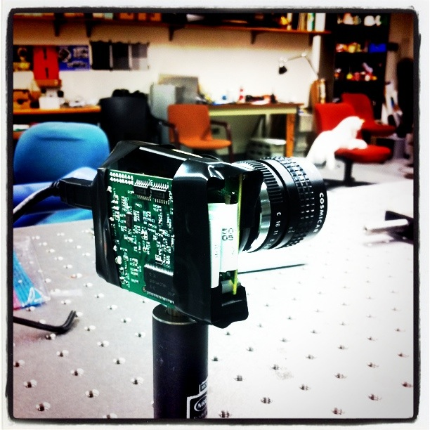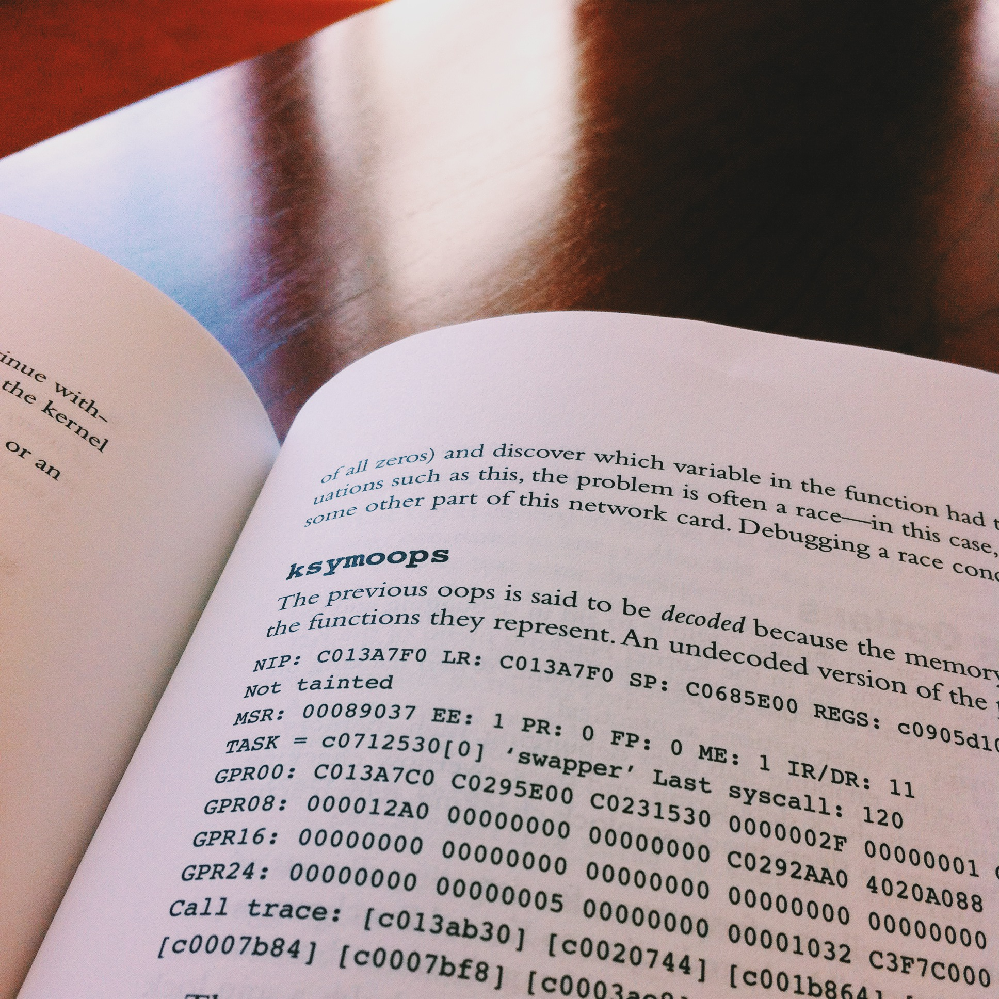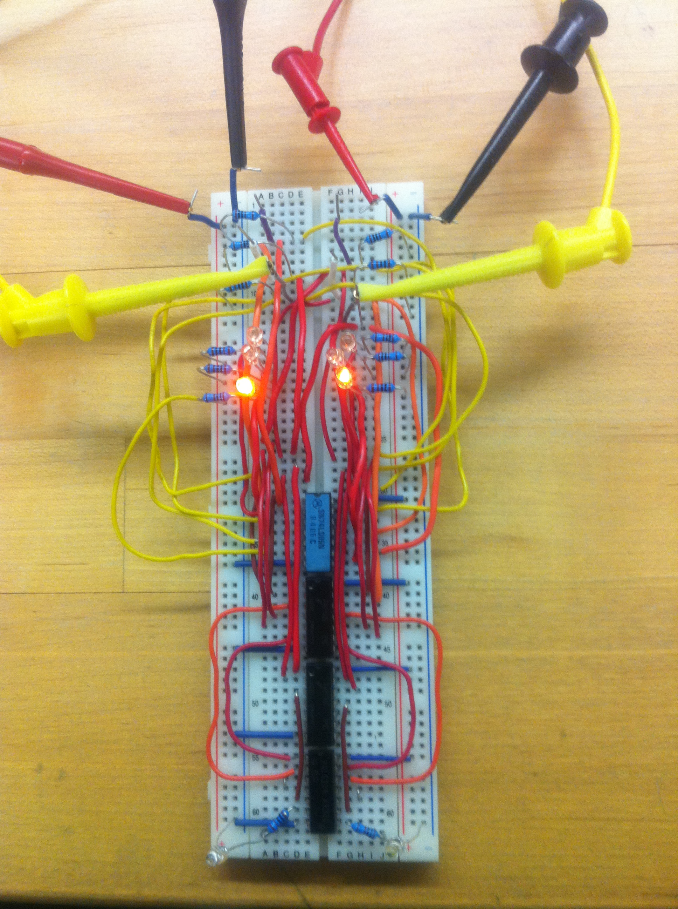
most of college: ????
it's ok to be confused! just keep trying new things until you find the things you love.
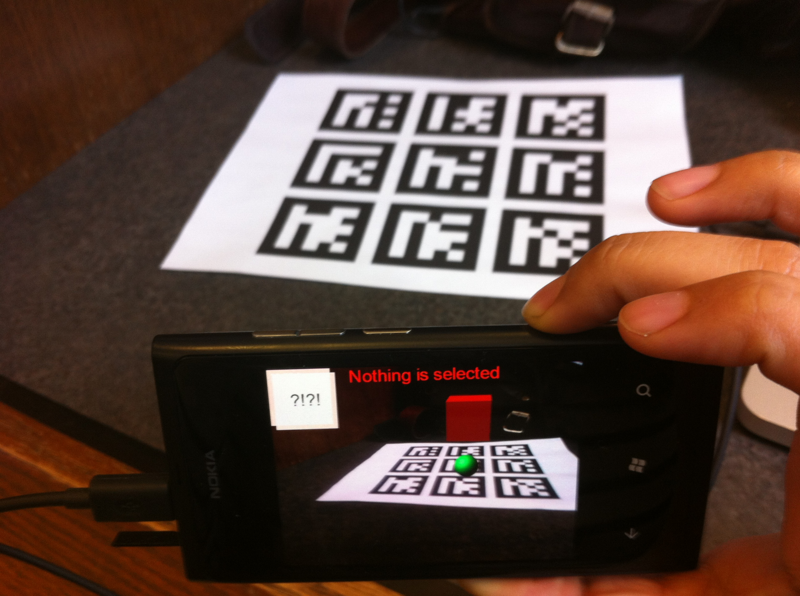 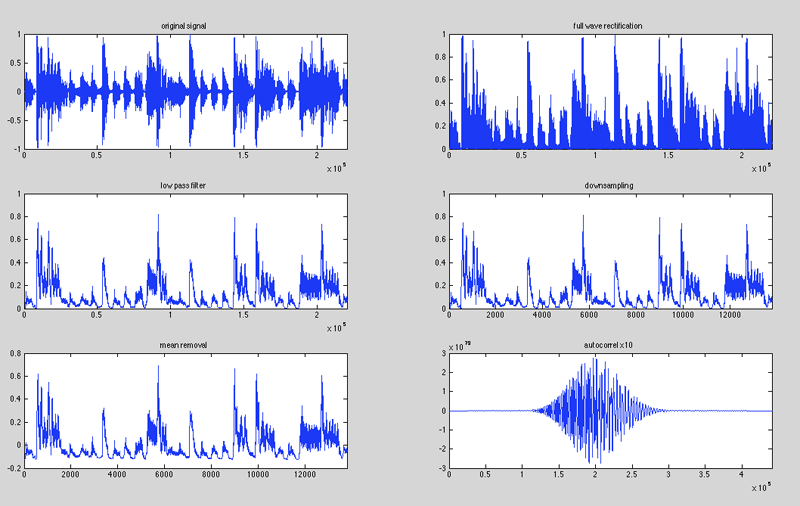
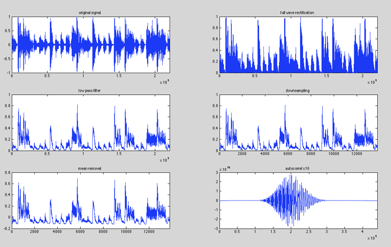
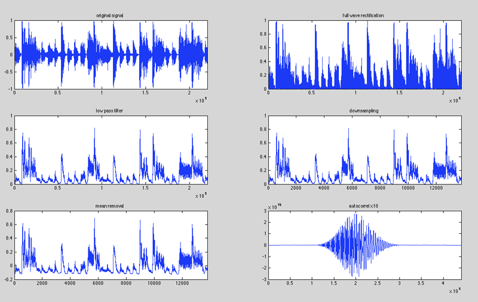
my future!computer science @ university of washington
(real background, not photoshop!)
(real background, not photoshop!)